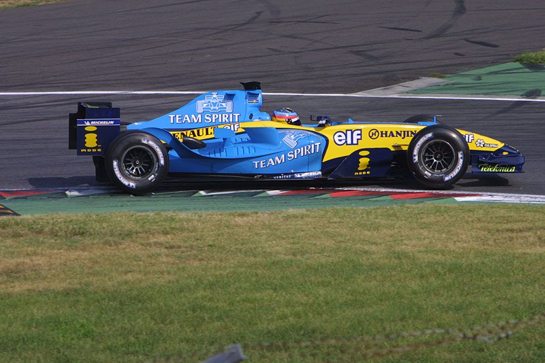
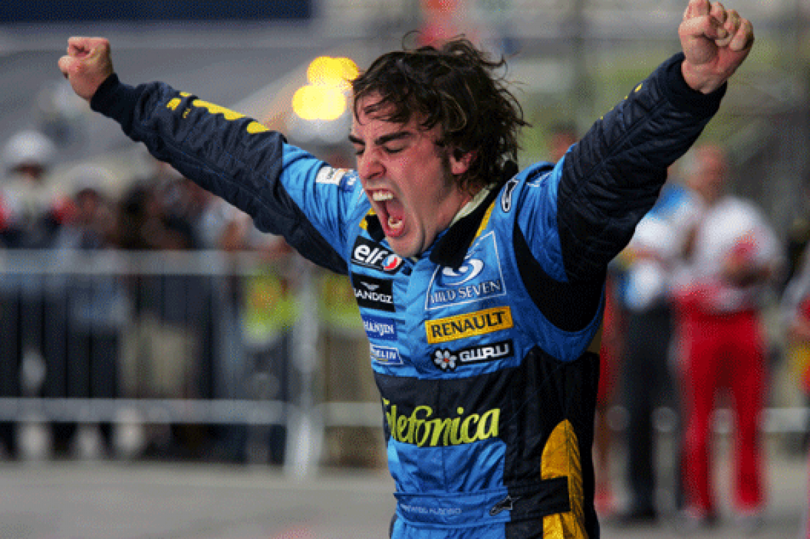

Fernando Alonso è uno dei piloti più talentuosi e rispettati nella storia della Formula 1. Nato il 29 luglio 1981 a Llanera, in Spagna, ha vinto due titoli mondiali con la Renault nel 2005 e 2006. Conosciuto per la sua abilità nel gestire le gomme e la sua strategia di gara, Alonso è stato un pioniere nell'ottimizzazione delle prestazioni delle monoposto. Dopo un periodo di successi, ha affrontato sfide con team meno competitivi, ma ha sempre dimostrato una straordinaria determinazione. Il suo ritorno in Formula 1 con la McLaren nel 2021 ha riacceso l'interesse dei fan, e continua a essere una figura influente nel motorsport.
 